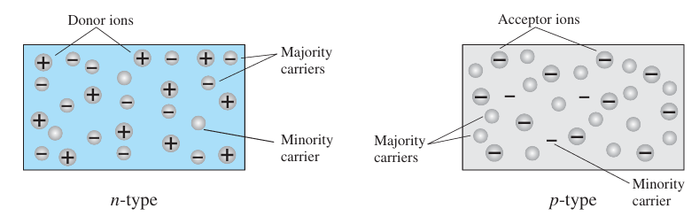
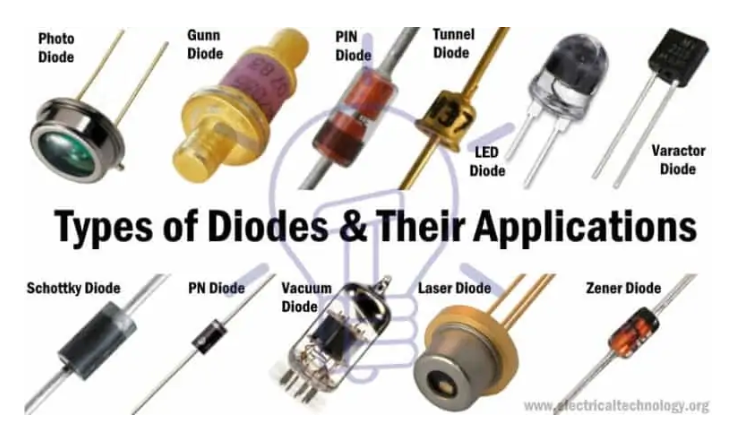

Diode#
First remind from Atom and material
Covalent Bonding of the Silicon Atom#
In silicon atoms, which have four valence electrons, covalent bonding occurs when each silicon atom shares its valence electrons with four neighboring atoms, forming a stable network. Each atom contributes four electrons, and by sharing with neighbors, a total of eight electrons are effectively involved in bonding, achieving stability through this interconnected structure.
Covalent bonding in germanium#
In germanium, each atom has four valence electrons and forms four covalent bonds with neighboring atoms, sharing one electron per bond. This results in each atom sharing a total of eight electrons with its four neighbors. At absolute zero, germanium acts as a perfect insulator due to the lack of free electrons, as all valence electrons are tightly bound in covalent bonds.
Behavior at Room Temperature#
At room temperature, some valence electrons gain enough thermal energy to break covalent bonds in the semiconductor. This process frees the electrons, making them available for conduction. The escape of an electron from a covalent bond creates a vacancy, known as a hole. Holes, which carry a positive charge, move in the opposite direction to electrons. The number of holes created is equal to the number of freed electrons, as a hole represents the absence of an electron.
Doping Semiconductors#
Doping modifies the electrical properties of semiconductors by introducing impurity atoms. By adding elements like phosphorus or boron to silicon, the material’s conductivity is adjusted. Phosphorus introduces extra electrons, creating n-type semiconductors, while boron creates holes, resulting in p-type semiconductors. These semiconductors are essential in devices like LEDs, solar cells, and transistors.
Extrinsic Semiconductors#
Extrinsic semiconductors result from doping pure semiconductors with impurities, altering their conductivity. This process categorizes semiconductors into n-type and p-type based on the type of dopant used. N-type semiconductors have excess electrons, while p-type semiconductors have holes in the valence band.

Doping with Phosphorus#
Phosphorus doping introduces extra electrons into silicon, creating n-type semiconductors. Phosphorus atoms replace silicon atoms and form covalent bonds, with the extra electron becoming free to move, enhancing conductivity. This results in a crystal where the number of free electrons equals the positive charge of the stationary phosphorus atoms, ensuring overall electrical neutrality.
Doping with Boron#
Boron doping creates p-type semiconductors by introducing holes into silicon. Boron atoms, with fewer valence electrons than silicon, create vacancies or “holes” in the crystal structure. These holes act as positive charge carriers, and their movement through the material contributes to electrical conductivity.
Motion of Electrons and Holes#
The motion of electrons and holes in a semiconductor is influenced by electric fields and thermal energy. Electrons and holes exhibit random thermal motion, known as diffusive flow, which is crucial for the behavior of p-n junctions. The average velocity of the carriers is no longer zero when an electric field \( \epsilon \) is applied to the semiconductor. This nonzero velocity is called the drift velocity. The drift velocity is superimposed on the thermal motion as illustrated in following Figure.
Energy Bands in Semiconductor Materials#
Band Theory: Electrons in a solid occupy energy bands. The two most important bands are the valence band (occupied by electrons) and the conduction band (where electrons can move freely).
n-Type and p-Type Materials#
n-Type Semiconductor:
Doping: N-type semiconductors are created by doping silicon with a Group 15 element (e.g., phosphorus). These elements have five valence electrons.
Extra Electrons: The extra electron from each dopant atom becomes a free carrier, increasing the material’s conductivity.
p-Type Semiconductor:
Doping: P-type semiconductors are created by doping silicon with a Group 13 element (e.g., boron). These elements have three valence electrons.
Holes: The absence of an electron creates a “hole” that acts as a positive charge carrier. These holes can move through the lattice, increasing the material’s conductivity.
Combining n-Type and p-Type Materials#
Formation of a Diode: When n-type and p-type materials are joined, a p-n junction is formed. The junction creates a depletion region where electrons and holes recombine, leading to a built-in electric field.
Diode Behavior: This junction allows current to flow easily in one direction (forward-biased) while blocking it in the opposite direction (reverse-biased).
Behavior at the p-n Junction#
When n-type and p-type silicon are joined, free electrons from the n-type side diffuse into the p-type side, and holes from the p-type side diffuse into the n-type side.
built-in electric field Due to their electric charge, this diffusion creates a built-in electric field at the junction. The field results from the positive charge left behind by diffusing electrons and the negative charge left by diffusing holes. This built-in electric field opposes further diffusion, establishing an equilibrium where the net flow of electrons and holes across the junction is zero. This electric field is crucial for the operation of diodes, transistors, and solar cells.
Depletion Region and Forward Bias#
The depletion region at the p-n junction is characterized by a lack of mobile charges, making it highly resistive and acting as a nearly perfect insulator. The resistance of this region can be modified by applying an external electric field. When a positive voltage is applied to the p-type side and a negative voltage to the n-type side (forward bias), the applied field reduces the depletion region’s resistance. At approximately 0.6 volts forward bias, the resistance becomes negligible, allowing current to flow with minimal obstruction.
Reverse Bias#
When a negative voltage is applied to the p-type side and a positive voltage is applied to the n-type side, no current flows, or the current is exceptionally small. This configuration is known as “Reverse Biased” (see following Figure).

IV curve of the silicon p-n junction diode#
Equation:
where:
\( V_T = \frac{k_B T}{q}\)
\( I_D \) is the forward current (diode current).
\( I_S \) is the saturation current.
\( q \) is the charge of an electron (approximately \( 1.602 \times 10^{-19} \) Coulombs).
\( V_D \) is the forward voltage.
\( \eta \) is the ideality factor (typically between 1 and 2).
\( k_B \) is Boltzmann’s constant (approximately \( 1.381 \times 10^{-23} \) J/K).
\( T \) is the absolute temperature in Kelvin.
import numpy as np
import matplotlib.pyplot as plt
# Constants
I_S = 1e-9 # Saturation current (A)
q = 1.602e-19 # Charge of an electron (Coulombs)
k_B = 1.381e-23 # Boltzmann's constant (J/K)
T = 300 # Temperature in Kelvin
eta = 1 # Ideality factor
#V_D1 = np.linspace(0.1, 0.2, 1000) # Voltage range with detailed steps
V_D2 = np.linspace(0.001, 0.75, 5000) # Voltage range with even more detailed steps
V_D3 = np.linspace(0.75, 10, 1000) # Voltage range with detailed steps
# Concatenate the voltage ranges
V_D = np.concatenate((V_D2, V_D3))
# Diode current calculation
V_T = k_B * T / q # Thermal voltage
I_D = I_S * (np.exp(V_D / (eta * V_T)) - 1)
exp_V_D = np.exp(V_D)
# Plotting
plt.figure(figsize=(8, 6))
plt.plot(V_D, I_D, label='Diode I-V Characteristics', color='b')
plt.xscale('log') # Use a logarithmic scale for the x-axis
plt.yscale('log') # Use a logarithmic scale for the y-axis
plt.xlabel('Forward Voltage (V_D) [V]')
plt.ylabel('Diode Current (I_D) [A]')
plt.title('Diode I-V Characteristics')
plt.legend()
plt.grid(True, linestyle='--', linewidth=0.5)
plt.show()
I-V Diode using Pyspice#
Small Signal model of Diode

I-V charactristic of Ideal diode , real Diode and Spice model

Diode=1n4148#
Include breakdown voltage and forward region
import numpy as np
import matplotlib.pyplot as plt
import PySpice.Logging.Logging as Logging
logger = Logging.setup_logging()
from PySpice.Spice.Netlist import Circuit
from PySpice.Unit import *
# Define sweep parameters
Vinput_start = -120
Vinput_stop = 20
Vinput_step = 0.001
# Define the circuit
circuit = Circuit('First Example Define diode')
# Add a diode with specific parameters
circuit.D('1', '2', circuit.gnd, model='Diode')
circuit.model('Diode', 'D', IS=4.352E-9, BV = 110, GMIN = 1E-12,
N=1.906, IBV = 0.0001, RS = 0.6458,
CJO = 7.048E-13, VJ = 0.869, M = 0.03, FC = 0.5 , TT = 3.48E-9
)
circuit.V('input', '1', circuit.gnd, 5)
circuit.V('meas', '1', '2', 0)
# Create a simulator
simulator = circuit.simulator(temperature=25, nominal_temperature=25)
# Perform a DC sweep analysis
analysis = simulator.dc(Vinput=slice(Vinput_start, Vinput_stop, Vinput_step))
waveform = analysis['2']
sweep_values1=analysis['v-sweep']
InputCurrentMeasurement=analysis['vmeas']
# Assuming waveform.data provides the voltage values for node '3'
voltage_values = np.array(waveform)
plt.xscale('symlog', linthresh=1)
plt.plot(voltage_values,InputCurrentMeasurement)
plt.xlabel('Vinput (V)')
plt.ylabel('Input current (A)')
plt.title('DC Sweep Analysis for input Node current')
plt.grid(True)
plt.show()
---------------------------------------------------------------------------
ModuleNotFoundError Traceback (most recent call last)
Cell In[2], line 4
1 import numpy as np
2 import matplotlib.pyplot as plt
----> 4 import PySpice.Logging.Logging as Logging
5 logger = Logging.setup_logging()
6 from PySpice.Spice.Netlist import Circuit
ModuleNotFoundError: No module named 'PySpice'
Line Load in Diode Circuits#
Concept of Line Load:
The load line is a graphical representation of the relationship between the voltage across the diode and the current through it, as dictated by the resistor in series. It is derived from Ohm’s Law and Kirchhoff’s Voltage Law.
How It Works:
Series Connection: In a simple series circuit with a diode and a resistor, the total voltage \( V_{source} \) is split between the diode and the resistor. The load line shows how the current through the resistor changes with the voltage drop across the diode.
Mathematical Relationship: The load line equation \( I_R = \frac{V_{source} - V_D}{R} \) is a straight line with slope \(-\frac{1}{R}\) and intersects the vertical axis at \( \frac{V_{source}}{R} \).
Finding the Intersection:
Diode I-V Curve: This curve represents the current through the diode as a function of the forward voltage. It’s described by the exponential equation:
\[ I_D = I_S \left( e^{\frac{V_D}{\eta V_T}} - 1 \right) \]where \( I_S \) is the saturation current, \( \eta \) is the ideality factor, and \( V_T \) is the thermal voltage.
Intersection Point: With following code we find intersection:
Voltage \( V_D \): 0.3590 V
Current \( I_D \): 4.6410e-03 A (4.641 mA)
This intersection represents the operating point of the diode when connected in series with a resistor and powered by a voltage source.
import numpy as np
from scipy.optimize import fsolve
# Constants
I_S = 4.352E-9 # Saturation current (A) for 1N4148
q = 1.602e-19 # Charge of an electron (Coulombs)
k_B = 1.381e-23 # Boltzmann's constant (J/K)
T = 300 # Temperature in Kelvin
eta = 1.906 # Ideality factor
R = 1000 # Resistor value (ohms)
V_source = 5 # Source voltage (V)
# Thermal voltage
V_T = k_B * T / q
# Define the function to solve
def diode_load_line(V_D):
I_D = I_S * (np.exp(V_D / (eta * V_T)) - 1)
I_R = (V_source - V_D) / R
return I_D - I_R
# Initial guess for the voltage
initial_guess = 1.9 # Start with a guess close to the expected intersection
# Solve for the intersection voltage
V_D_intersection, info, ier, msg = fsolve(diode_load_line, initial_guess, full_output=True)
V_D_intersection=V_D_intersection[0]
# Calculate the corresponding current
I_D_intersection = I_S * (np.exp(V_D_intersection / (eta * V_T)) - 1)
# Display results
print(f"Intersection Voltage (V_D): {V_D_intersection:.4f} V")
print(f"Intersection Current (I_D): {I_D_intersection:.4e} A")
Intersection Voltage (V_D): 0.6806 V
Intersection Current (I_D): 4.3194e-03 A
Load Line:#
The load line represents the relationship between the voltage across the diode and the current through it due to the resistor and source voltage. It is given by:
where \( R \) is the resistor value and \( V_{source} \) is the supply voltage.
Intersection Calculation: To find the intersection point, we solve the equation:
This involves numerical methods to find the voltage \( V_D \) where the diode current equals the resistor current.
Visualizing the Intersection: By plotting the diode I-V curve and the load line, and highlighting the intersection point, we can visually verify where the diode operates in the circuit. This point is where the diode’s current and voltage match the constraints imposed by the resistor and the power supply.
Role in Circuit Analysis:
Operating Point: The intersection of the load line with the diode I-V curve indicates the operating point of the diode. This is where the diode is in equilibrium with the resistor and power supply.
Impact of Resistor and Source Voltage: Changes in resistor value \( R \) or source voltage \( V_{source} \) will shift the load line, affecting the intersection point and thus the operating point of the diode.
Graphical Analysis:
Plotting: By plotting both the diode I-V curve and the load line, you can visually determine the operating point. This is useful for understanding how the diode will behave under different conditions and for designing circuits with specific operating points.
import numpy as np
import matplotlib.pyplot as plt
# Constants
I_S = 4.352E-9 # Saturation current (A) for 1N4148
q = 1.602e-19 # Charge of an electron (Coulombs)
k_B = 1.381e-23 # Boltzmann's constant (J/K)
T = 300 # Temperature in Kelvin
eta = 1.906 # Ideality factor
R = 1000 # Resistor value (ohms)
V_source = 5 # Source voltage (V)
# Voltage range focused around the intersection
V_D = np.linspace(0.35, 0.755, 5000) # Voltage range with detailed steps
# Diode current calculation
V_T = k_B * T / q # Thermal voltage
I_D = I_S * (np.exp(V_D / (eta * V_T)) - 1)
# Load line calculation
I_R = (V_source - V_D) / R
# Intersection values
V_D_intersection = 0.6806
I_D_intersection = 4.3194e-03
# Plotting
plt.figure(figsize=(8, 6))
plt.plot(V_D, I_D, label='Diode I-V Characteristics', color='b')
plt.plot(V_D, I_R, label=f'Load Line (R={R} Ω)', color='r')
plt.plot(V_D_intersection, I_D_intersection, 'go', label='Intersection Point') # Highlight intersection
plt.xlabel('Forward Voltage (V_D) [V]')
plt.ylabel('Current (I) [A]')
plt.title('Diode I-V Characteristics with Load Line')
plt.legend()
plt.grid(True, linestyle='--', linewidth=0.5)
plt.show()
Main problem in Diode circuit solving#
Main problem is solving non-linear equation. Also Bias elements generally arise from peripheral constraints (such as the voltage source and resistance).
The constraints do not allow the diode's operating point to occur at the desired V_D and I_D, resulting in improper biasing.Another example show that, Given:
\( V_{source} = 5 \text{ V} \)
\( R \approx 10 \text{k}\Omega \)
Diode characteristics:
\( I_S = 4.352 \times 10^{-9} \text{ A} \)
\( \eta = 1.906 \)
\( V_T = 0.0258 \text{ V} \)
To find the diode’s operating point \( V_D \) and \( I_D \), we follow:
Substitute \( I_D \) into the diode equation:
Solved Values:#
After running the above code, you would get:
\( V_D \approx 0.3 \text{ V} \)
\( I_D \approx 0.5 \text{ mA} \) or \( 0.39 \text{ mA} \)
import numpy as np
from scipy.optimize import fsolve
# Constants
I_S = 4.352e-9
V_T = 0.0258
eta = 1.906 # Ideality factor
R = 10000
V_source = 5
# Define the equation
def equation(V_D):
I_D = (V_source - V_D) / R
return I_D - I_S * (np.exp(V_D /(eta*V_T)) - 1)
# Initial guess for V_D
V_D_initial_guess = 2
# Solve for V_D
V_D_solution = fsolve(equation, V_D_initial_guess)[0]
I_D_solution = (V_source - V_D_solution) / R
print(f"Diode Voltage (V_D): {V_D_solution:.4f} V")
print(f"Diode Current (I_D): {I_D_solution:.4f} A")
Diode Voltage (V_D): 0.5671 V
Diode Current (I_D): 0.0004 A
Bias 1n4148#
Following experiments show that
import numpy as np
from scipy.optimize import fsolve
# Constants
I_S = 4.352e-9 # Saturation current (A) for 1N4148
V_T = 0.0258 # Thermal voltage (V) at room temperature
eta = 1.906 # Ideality factor
# Function to calculate diode voltage and current
def solve_vd(V_source, R):
# Define the diode equation for fsolve
def diode_equation(V_D):
I_D = (V_source - V_D) / R
return I_D - I_S * (np.exp(V_D / (eta * V_T)) - 1)
# Initial guess for V_D
V_D_initial_guess = 2
# Solve for V_D
V_D_solution = fsolve(diode_equation, V_D_initial_guess)[0]
I_D_solution = (V_source - V_D_solution) / R
return V_D_solution, I_D_solution
# Expanded ranges for resistors and source voltages
resistors = np.logspace(1, 7, num=10) # From 10 Ω to 100 kΩ
voltages = np.linspace(1, 20, num=10) # From 1 V to 20 V
# Generate the table
print(f"{'R (Ω)':<15} {'V_source (V)':<15} {'I_D (mA)':<15} {'V_D (V)':<15}")
for R in resistors:
for V_source in voltages:
V_D, I_D = solve_vd(V_source, R)
# Ensure V_D is at least 0.6V
if V_D >= 0.5 and R >= 100 :
I_D_mA = I_D * 1000 # Convert current to mA
print(f"{R:<15.2f} {V_source:<15.2f} {I_D_mA:<15.4f} {V_D:<15.4f}")
R (Ω) V_source (V) I_D (mA) V_D (V)
215.44 1.00 1.7024 0.6332
215.44 3.11 11.0739 0.7253
215.44 5.22 20.7297 0.7561
215.44 7.33 30.4410 0.7750
215.44 9.44 40.1765 0.7887
215.44 11.56 49.9259 0.7994
215.44 13.67 59.6840 0.8081
215.44 15.78 69.4483 0.8156
215.44 17.89 79.2172 0.8221
215.44 20.00 88.9896 0.8278
1000.00 1.00 0.4340 0.5660
1000.00 3.11 2.4598 0.6513
1000.00 5.22 4.5408 0.6815
1000.00 7.33 6.6332 0.7001
1000.00 9.44 8.7308 0.7136
1000.00 11.56 10.8313 0.7242
1000.00 13.67 12.9337 0.7329
1000.00 15.78 15.0374 0.7403
1000.00 17.89 17.1421 0.7468
1000.00 20.00 19.2475 0.7525
4641.59 3.11 0.5459 0.5773
4641.59 5.22 0.9944 0.6068
4641.59 7.33 1.4452 0.6252
4641.59 9.44 1.8972 0.6385
4641.59 11.56 2.3497 0.6491
4641.59 13.67 2.8027 0.6577
4641.59 15.78 3.2559 0.6651
4641.59 17.89 3.7094 0.6715
4641.59 20.00 4.1630 0.6772
21544.35 3.11 0.1210 0.5032
21544.35 5.22 0.2177 0.5321
21544.35 7.33 0.3148 0.5502
21544.35 9.44 0.4122 0.5635
21544.35 11.56 0.5097 0.5739
21544.35 13.67 0.6073 0.5825
21544.35 15.78 0.7050 0.5899
21544.35 17.89 0.8027 0.5962
21544.35 20.00 0.9004 0.6019
100000.00 13.67 0.1316 0.5073
100000.00 15.78 0.1526 0.5146
100000.00 17.89 0.1737 0.5210
100000.00 20.00 0.1947 0.5266
Lookup Table#
Following program stored lookup table that you need untile end of Diode chapter and BJT transistor chapter [‘R (Ohm)’, ‘V_source (V)’, ‘I_D (mA)’, ‘V_D (V)’]
import numpy as np
import csv
from scipy.optimize import fsolve
# Constants
I_S = 4.352e-9 # Saturation current (A) for 1N4148
V_T = 0.0258 # Thermal voltage (V) at room temperature
eta = 1.906 # Ideality factor
# Function to calculate diode voltage and current
def solve_vd(V_source, R):
# Define the diode equation for fsolve
def diode_equation(V_D):
I_D = (V_source - V_D) / R
return I_D - I_S * (np.exp(V_D / (eta * V_T)) - 1)
# Initial guess for V_D
V_D_initial_guess = 2
# Solve for V_D
V_D_solution = fsolve(diode_equation, V_D_initial_guess)[0]
I_D_solution = (V_source - V_D_solution) / R
return V_D_solution, I_D_solution
# Expanded ranges for resistors and source voltages
resistors = np.logspace(1, 7, num=10) # From 10 Ω to 100 kΩ
voltages = np.linspace(1, 20, num=10) # From 1 V to 20 V
# Open a file to write the results
with open('diode_lookup_table.csv', 'w', newline='') as file:
writer = csv.writer(file)
# Write the header
writer.writerow(['R (Ohm)', 'V_source (V)', 'I_D (mA)', 'V_D (V)'])
# Calculate and write the data
for R in resistors:
for V_source in voltages:
V_D, I_D = solve_vd(V_source, R)
# Ensure V_D is at least 0.6V
if V_D >= 0.5 and R >= 100:
I_D_mA = I_D * 1000 # Convert current to mA
writer.writerow([R, V_source, I_D_mA, V_D])
Good Results for 1N4148#
If the source voltage is approximately 3V, we can use a 0.65V resistor at both ends with \( R = 1000 \, \Omega \).
If the source voltage is approximately 1V, \( V_D = 0.6332 \) and \( R = 215 \, \Omega \).
Note:
You cannot assume a diode voltage of 0.7V and then find a desired current to pass through it, or vice versa, assume a resistor and calculate the diode current. Instead, you must calculate based on the diode’s voltage or current and the source voltage or resistor value, which may be unknown and could be either the limiting resistor or the source voltage.
AC or Dynamic Resistance#
Applying a sinusoidal input in series with a DC signal significantly alters the diode’s behavior.
The varying input causes the instantaneous operating point to fluctuate around the Q-point, leading to changes in current and voltage as illustrated in the following Figure.
Without the varying signal, the operation point is fixed at the Q-point, which is derived from the quiescent state. A tangent line at the Q-point defines the small-signal resistance, which varies with the slope of the characteristic curve and denpend on DC voltage.
As the slope steepens, the small-signal resistance decreases, making it lower in the vertical-rise region and higher at low current levels.
Calculation of Dynamic Resistance#
Diode Current Equation: The diode current \( I_D \) is given by the Shockley diode equation:
where:
\( I_S \) is the saturation current.
\( V_D \) is the diode voltage.
\( \eta \) is the ideality factor.
\( V_T \) is the thermal voltage.
Derivative of Diode Current: To find the derivative of \( I_D \) with respect to \( V_D \), use the chain rule:

Since the derivative of \( e^{\frac{V_D}{\eta V_T}} \) with respect to \( V_D \) is:
Therefore:
Small-Signal Resistance (\( r_d \)): The small-signal resistance \( r_d \) is the reciprocal of the derivative:
Simplify it using the diode current equation:
For practical purposes where \( I_D \gg I_S \):
import numpy as np
import matplotlib.pyplot as plt
# Constants
I_S = 4.352e-9 # Saturation current (A) for 1N4148
n = 1.906 # Ideality factor
V_T = 0.0258 # Thermal voltage (V) at room temperature
# Operating point voltage
V_D = 0.6513 # Example operating point voltage (V)
# Small-signal resistance calculation
def small_signal_resistance(V_D, I_S, n, V_T):
I_D = I_S * (np.exp(V_D / (n * V_T)) - 1)
r_d = n * V_T / I_D
return r_d
# Small sinusoidal input
omega = 2 * np.pi * 1000 # Frequency of the sinusoidal signal (1 kHz)
t = np.linspace(0, 0.01, 1000) # Time array (0 to 10 ms)
v_signal = 0.01 * np.sin(omega * t) # Small sinusoidal signal (10 mV amplitude)
# Calculate small-signal resistance at the operating point
r_d = small_signal_resistance(V_D, I_S, n, V_T)
# Calculate the diode current response to the small signal
# Note: v_signal should be applied as an AC signal on top of V_D
I_D_response = I_S * (np.exp((V_D + v_signal) / (n * V_T)) - 1)
# Plotting
plt.figure(figsize=(12, 6))
# Plot the small sinusoidal input
plt.subplot(2, 1, 1)
plt.plot(t, v_signal, label='Small Sinusoidal Input')
plt.xlabel('Time (s)')
plt.ylabel('Voltage (V)')
plt.title('Small Sinusoidal Input')
plt.grid(True)
plt.legend()
# Plot the diode current response
plt.subplot(2, 1, 2)
plt.plot(t, I_D_response, label='Diode Current Response', color='r')
plt.xlabel('Time (s)')
plt.ylabel('Current (A)')
plt.title('Diode Current Response to Small Signal')
plt.grid(True)
plt.legend()
plt.tight_layout()
plt.show()
Research Problem for Diode Analysis#
Objective: To investigate how to address each question and conduct research on diodes and BJTs, we need to follow the specified algorithm. Specifically, we aim to determine how the amplitude of the diode current changes with varying operating point voltages \( V_D \). This involves analyzing the diode’s small-signal response to a sinusoidal input and comparing these findings with similar devices like BJTs to gain insights into their comparative behaviors and characteristics.
Learning Module for Lookup Table of Diode#
Objective: To generate a CSV file containing diode parameters for various resistor and source voltage values.
Algorithm#
Define Constants
Set values for:
Saturation current \( I_S \)
Thermal voltage \( V_T \)
Ideality factor \( \eta \)
Compute Diode Parameters
For a range of resistors and source voltages:
Compute diode voltage \( V_D \)
Compute diode current \( I_D \) using the diode equation
Save Data
Write the computed values of:
Resistor \( R \)
Source voltage \( V_{\text{source}} \)
Diode current \( I_D \)
Diode voltage \( V_D \)
Save the data to a CSV file named
diode_lookup_table.csv
Flowchart#
+-----------------------------+
| Start |
+-----------------------------+
|
v
+-----------------------------+
| Define Constants |
| - Set I_S, V_T, η |
+-----------------------------+
|
v
+-----------------------------+
| Compute Diode Parameters |
| - For each R and V_source: |
| - Compute V_D and I_D |
+-----------------------------+
|
v
+-----------------------------+
| Save Data to CSV |
| - R, V_source, I_D, V_D |
|-File:diode_lookup_table.csv |
+-----------------------------+
|
v
+-----------------------------+
| End |
+-----------------------------+
Research Module for Analyzing Diode Data#
Objective: To analyze the amplitude of the diode current as a function of the operating point voltage \( V_D \) and visualize this relationship.
Algorithm#
Read Data from CSV File
Open the CSV file
diode_lookup_table.csvExtract values of:
Resistor \( R \)
Source voltage \( V_{\text{source}} \)
Diode voltage \( V_D \)
Calculate Small-Signal Resistance
For each entry:
Calculate diode current \( I_D \) using the diode equation
Compute the small-signal resistance \( r_d \) using the formula:
Compute Amplitude of Diode Current
For each operating point:
Generate a small sinusoidal signal \( v_{\text{signal}} = 0.01 \cdot \sin(\omega \cdot t) \)
Compute diode voltage response \( v_{\text{diode}} = v_{\text{signal}} \cdot r_d \)
Determine the amplitude of \( v_{\text{diode}} \)
Plot Results
Create a plot of the amplitude of the diode current versus the operating point voltage \( V_D \)
Flowchart#
+-----------------------------+
| Start |
+-----------------------------+
|
v
+-----------------------------+
| Read Data from CSV |
| - Extract R, V_source, V_D |
+-----------------------------+
|
v
+----------------------------+
| Cal. Small Signal Res. |
| - For each entry: |
| - Compute I_D |
| - Compute r_d |
+----------------------------+
|
v
+-----------------------------+
| Comp. Amp.of Diode Current |
| - Generate v_signal |
| - Compute v_diode |
| - Determine amplitude |
+-----------------------------+
|
v
+-----------------------------+
| Plot Amplitude vs V_D |
+-----------------------------+
|
v
+-----------------------------+
| End |
+-----------------------------+
import numpy as np
import matplotlib.pyplot as plt
import csv
# Constants
I_S = 4.352e-9 # Saturation current (A) for 1N4148
V_T = 0.0258 # Thermal voltage (V) at room temperature
eta = 1.906 # Ideality factor
# Read data from CSV
def read_data_from_csv(filename):
R_values = []
V_source_values = []
V_D_values = []
with open(filename, 'r') as file:
reader = csv.DictReader(file)
for row in reader:
R_values.append(float(row['R (Ohm)']))
V_source_values.append(float(row['V_source (V)']))
V_D_values.append(float(row['V_D (V)']))
return R_values, V_source_values, V_D_values
# Function to calculate small-signal resistance
def small_signal_resistance(V_D, I_S, n, V_T):
I_D = I_S * (np.exp(V_D / (n * V_T)) - 1)
r_d = n * V_T / I_D
return r_d
# Calculate amplitude of current for a sinusoidal input
def calculate_current_amplitude(V_D, V_source, R, I_S, n, V_T):
r_d = small_signal_resistance(V_D, I_S, n, V_T)
omega = 2 * np.pi * 1000 # Frequency of the sinusoidal signal (1 kHz)
t = np.linspace(0, 0.01, 1000) # Time array (0 to 10 ms)
v_signal = 0.01 * np.sin(omega * t) # Small sinusoidal signal (10 mV amplitude)
# Diode voltage response
current_diode = v_signal /(r_d+R)
amplitude = np.max(np.abs(current_diode)) # Amplitude of the response signal
return amplitude
# Load data from CSV file
filename = 'diode_lookup_table.csv'
R_values, V_source_values, V_D_values = read_data_from_csv(filename)
# Calculate current amplitude for each operating point
amplitudes = []
for R, V_source, V_D in zip(R_values, V_source_values, V_D_values):
amplitude = calculate_current_amplitude(V_D, V_source, R, I_S, eta, V_T)
amplitudes.append((V_D, amplitude))
# Plotting
V_D_array, amplitude_array = zip(*amplitudes)
plt.figure(figsize=(10, 6))
plt.plot(V_D_array, np.array(amplitude_array) * 1000, marker='+', linestyle='None')
plt.xlabel('Operating Point Voltage V_D (V)')
plt.ylabel('Amplitude of Diode Current (mA)')
plt.title('Amplitude of Diode Current vs. Operating Point Voltage')
plt.grid(True)
plt.show()
Conclusion above figure#
It is clear that as the operating point moves towards a higher diode voltage, the slope of the line increases, and the gain coefficient also increases. This is why the current amplitude quickly increases with a higher diode bias voltage.
DIODE EQUIVALENT CIRCUITS#
Definition and Purpose: An equivalent circuit represents the terminal characteristics of a device or system in a specific operating region. This allows for the replacement of the device symbol with the equivalent circuit in a schematic without significantly affecting the system’s behavior.
Piecewise-Linear Equivalent Circuit: For diodes, the equivalent circuit can be approximated using straight-line segments. This piecewise-linear model provides a close approximation of the diode’s behavior, especially in the knee region, using average AC resistance for the “on” state and accounting for a threshold voltage.
Simplified and Ideal Equivalent Circuits: The simplified equivalent circuit often ignores the small resistance of the diode (rav), showing that a forward-biased silicon diode typically has a 0.7 V drop. The ideal equivalent circuit further simplifies this by ignoring the 0.7 V drop, assuming the diode as ideal for practical purposes.
Types of Diode#
Zener Diode#
In the Zener region, the current direction is opposite to that of a forward-biased diode, and the curve’s slope indicates some resistance.
This unique characteristic is utilized in Zener diodes, which conduct in the reverse direction compared to standard semiconductor diodes.

The light-emitting diode (LED)#
The light-emitting diode (LED) is a diode that emits visible or invisible (infrared) light when forward-biased. Unlike silicon and germanium diodes, which mostly dissipate energy as heat, LEDs made from materials like GaAs emit infrared light. LEDs have a wide range of applications, including security systems, industrial processing, and remote controls. The construction and materials of LEDs enable efficient light emission, with various compound semiconductors generating different wavelengths of light.
Various LED configurations:
seven-segment digital display
LED TV
Outdoor Sports Lighting
Homework: Type of Diode#
Select one type of diode shown in the following figure (or choose another type) and complete the following tasks:
Gather necessary information from an electronics and circuit perspective, and present it in a Jupyter Notebook (
.ipynb) format.Solve one circuit problem involving the selected diode and deliver the solution in a Jupyter Notebook (
.ipynb).Include the use of PySpice and Schemdraw in your solution.
